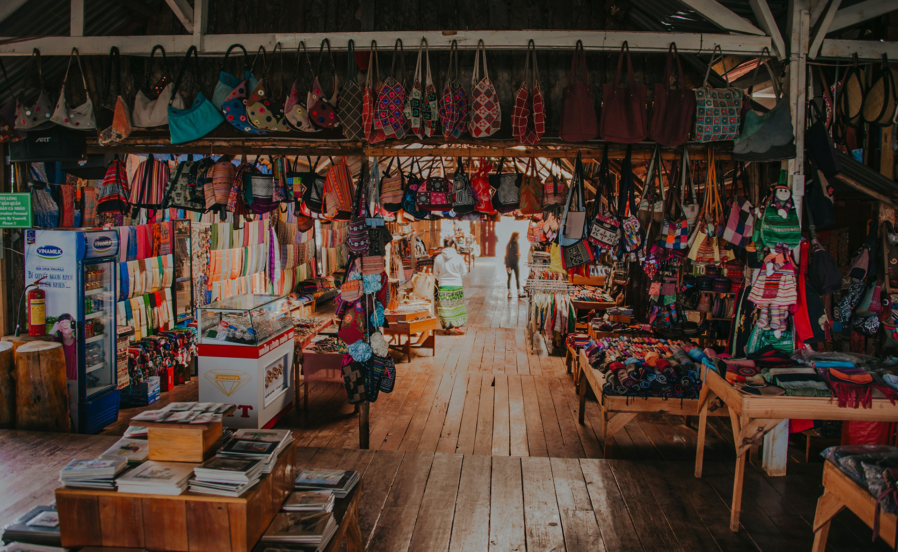

"Thrifting" has been around for a very long time, but I found some history to document the very first establishment. "The first organization one might genuinely consider a “charity shop” was the Wolverhampton Society for the Blind in Staffordshire, England. Citizens donated used goods for sale, with the proceeds going to provide for the visually impaired. As noted, the Salvation Army began its thrift shop work in 1897."(According to TRVST.com)
I especially love to find older, veru used furniture and reupholster it to bring it back to life. I have a huge interest in vintage and retro style, and I believe that thirft stores are the best places to find old items that are ready for a new life! There are so many design ideas when I walk into thrift stores that the opportunities are endless. If thifting isn't something you have tried, I would highly reccomend it! You never know what you will find.